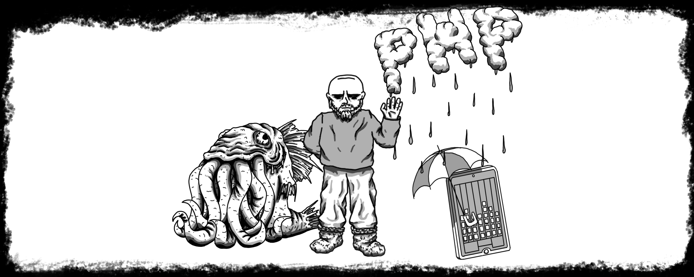
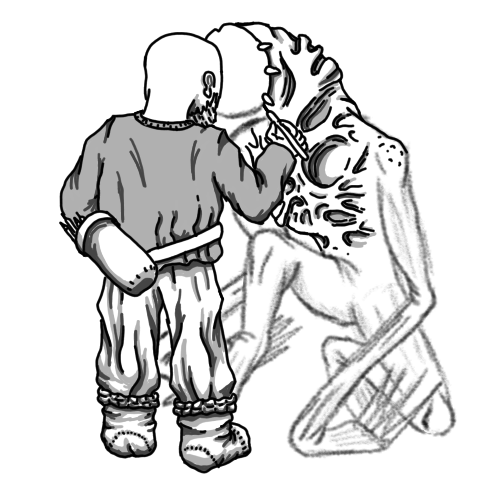

Ohra-aho

Olen Panu Ohra-aho ja olen IT-insinööri. Kirjoitan koneella kummallista kieltä, joka saa koneet tekemään mitä haluan. Ainakin toisinaan kone ja minä ymmärrämme toisiamme, mutta toisinaan emme. Tämän sivuston kohdalla kone ymmärsi mitä tarkoitin. Sivut ovat olemassa kertoakseen, millainen insinööri minä olen. Tervetuloa.


IT-insinööri
Tarkemmalta suuntautumiseltani olen mediatekniikan insinööri LAB amk:sta. Web kehitystä, pelinkehitystä, mobiilikehitystä, jonkun verran AR teknologiaa ja audiovisuaalista suunnittelua. Parhaiten pärjään käyttöliittymien puolella, mutta taustajärjestelmät ovat myös tulleet tutuiksi.
Lisää →

Web-kehittäjä
Tähän opintoni painottuivat ja tätä olen eniten päässyt tekemään. Työkaluja on hyvässä muistissa muutama, mutta käyttänyt olen aika monia muitakin. Perus html totta kai, mukana PHP hitusen React:ia ja Angular:ia ja Flutter:ia. PHP:n lisäksi taustajärjestelmissä on käytetty Node.js:sää.
Lisää →

Pelinkehittäjä
Tämä on rakkaimpia harrastuksiani. Lapsena lauta- ja korttipelejä ja nykyään videopelejä. Yksi demo valmiina ja toinen kokonainen peli tulossa. Tämä harrastus on tuonut mielestäni parhaiten kaiken osaamiseni kokoon. Visuaalinen puoli yhdistyy käyttöliittymäkehitykseen ja muuhun geneerisempää koodaamiseen.
Lisää →

2D artisti
Piirrän aina toisinaan. Olen siinä melko hyvä, mitä tulee sarjakuvamaisiin hirviöihin tai muihin karikatyyrihahmoihin. Tarkimmat työni yleensä säätän pelejäni varten, mutta tulee myös tehtyä suurempia projekteja ihan vain tekemisen ilosta.
Lisää →